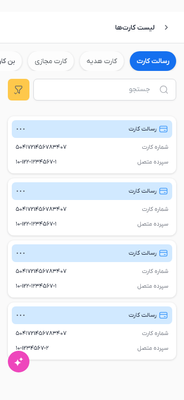
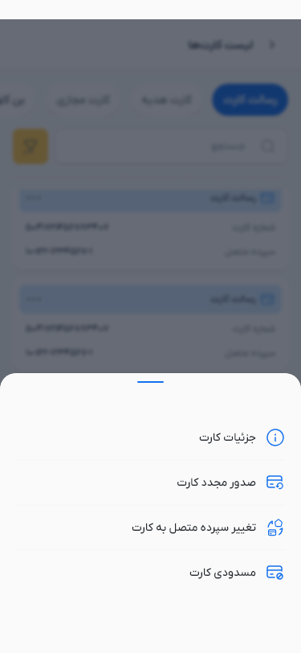
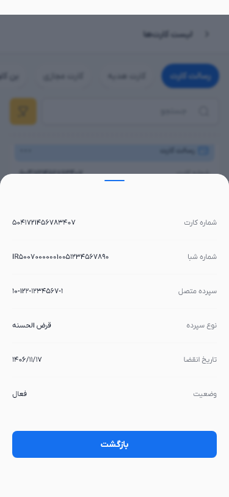
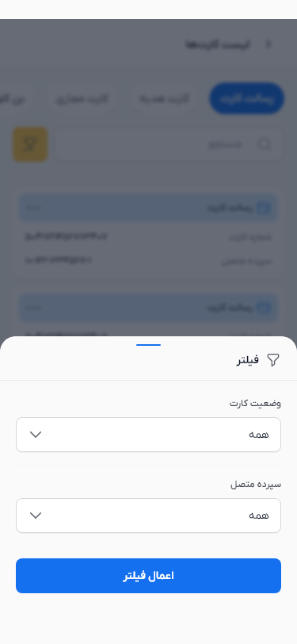
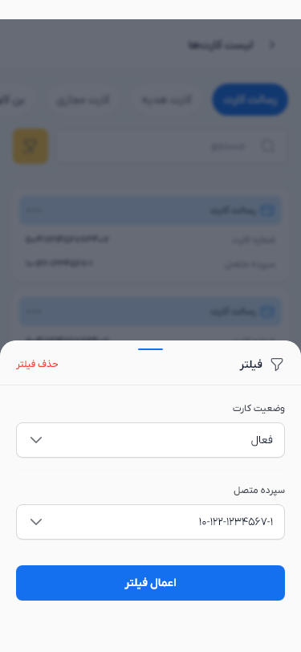
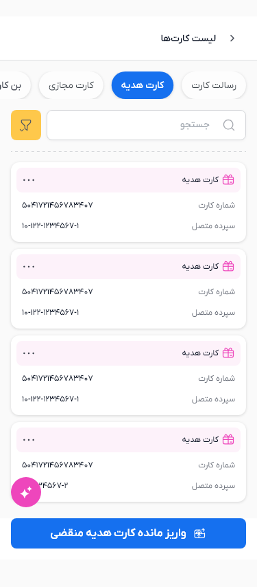
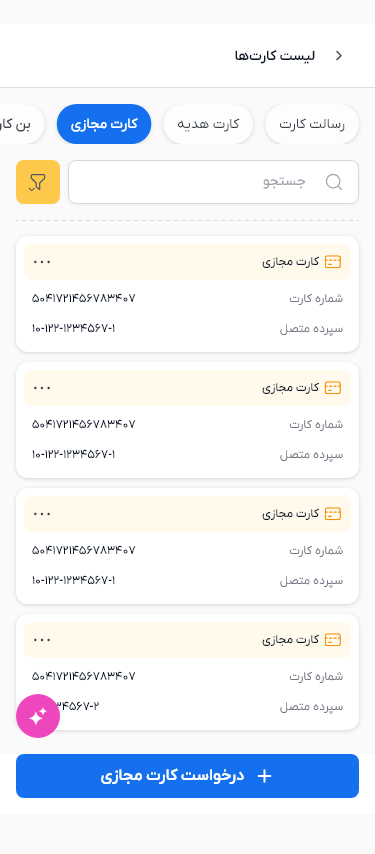
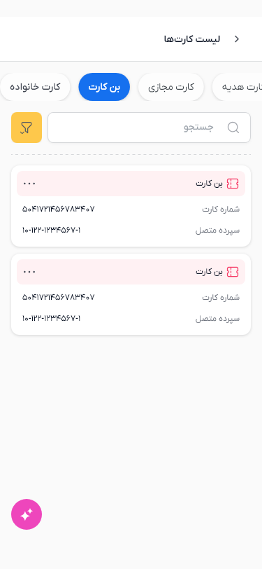
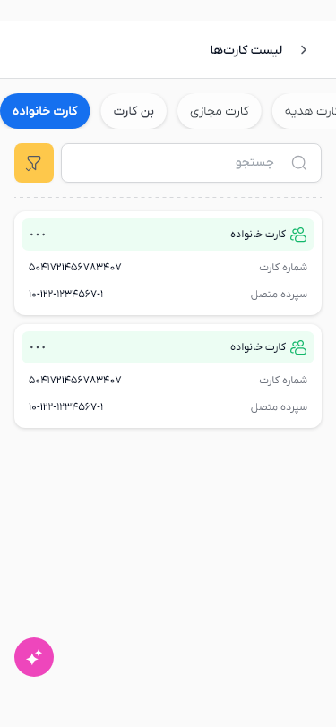

Flutter renders with mock data and safe-area spacing. Native system bars are excluded. Shared components use the approved compatible variants. The original scrim SVG's advanced filter is unsupported; native backdrop blur supplies its blur treatment. Architecture and component audit








